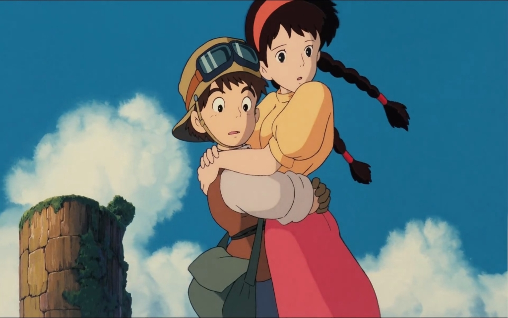

City of sky
Now people always think that the sky city is a sad love song, in fact, the sky, the sky is the expression of the city in the sky of the sadness of the disappeared. People at IMTV for their own greed, sky city people in order to protect their homes, eventually personally ruined the beauty of the sky city.
READMORE
Spirited away
"Spirited away" is directed by Hayao Miyazaki, screenwriter, Studio Ghibli animated film, the film was officially released in Japan in July 20, 2001, tells the girl Chihiro meaning outside to the spiritual world after the story of god. The film won the 2003 Oscar Award for the best long animation, but also the history of the first so far is the only one to obtain the identity of the film in Europe.
READMORE